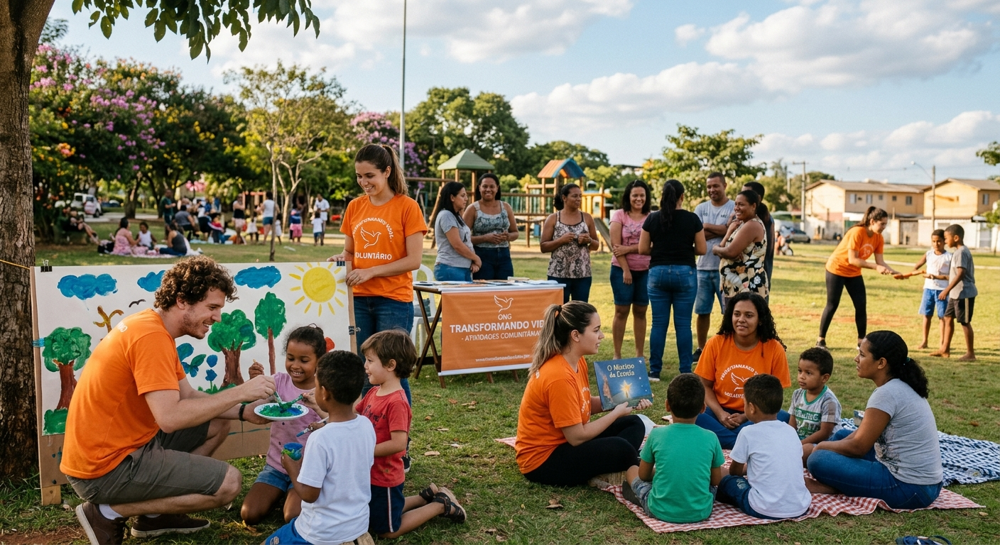
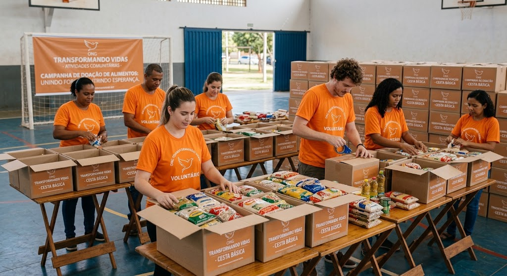
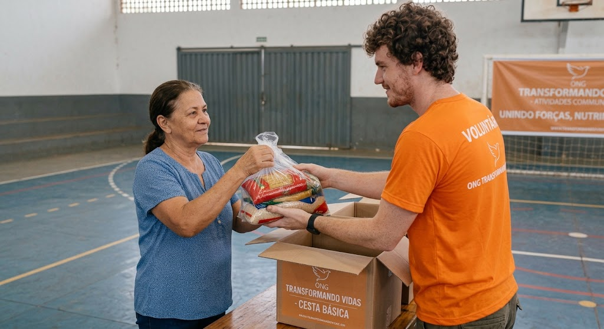
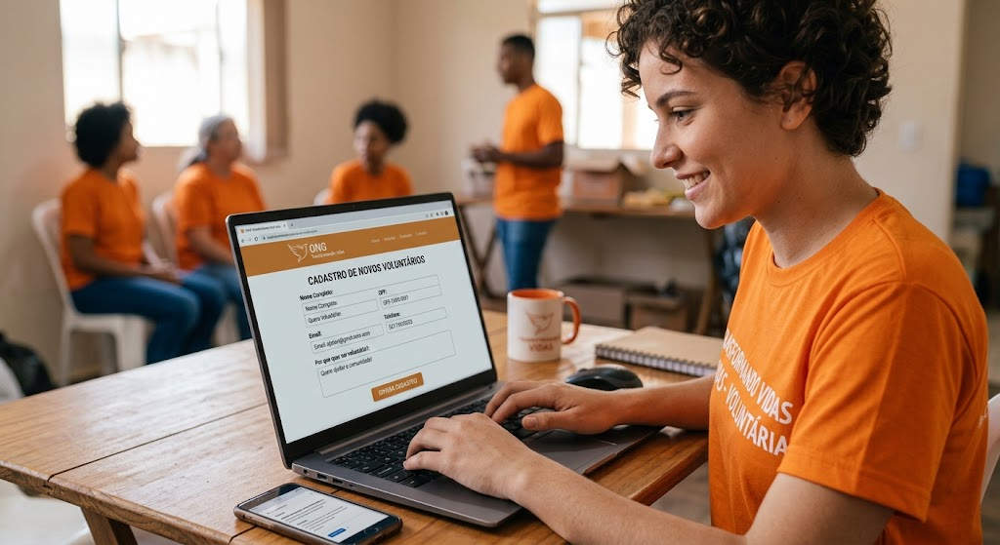

Apresentação dos Projetos

A ONG Esperança Viva desenvolve projetos sociais voltados para educação, alimentação, cultura e inclusão social.
Conheça nossas principais iniciativas e descubra como você pode participar.
Campanhas de Doação

Nossas campanhas de doação têm como objetivo arrecadar recursos e materiais para apoiar famílias e crianças atendidas pela ONG.
Campanha Alimentando Esperanças
Arrecadação de alimentos não perecíveis para a montagem de cestas básicas.
Campanha Material Escolar
Arrecadação de cadernos, lápis, mochilas e outros materiais escolares.
Campanha Inverno Solidário
Arrecadação de roupas, cobertores e agasalhos.
Formas de Realizar Doações

Existem diferentes maneiras de contribuir com a ONG Esperança Viva.
- Doação financeira: contribuição através de transferência bancária.
- Doação de alimentos: entrega de alimentos não perecíveis.
- Doação de materiais: contribuição com materiais escolares e educativos.
- Doação de roupas: entrega de roupas e cobertores em boas condições.
Programa de Voluntariado

O Programa de Voluntariado da ONG Esperança Viva reúne pessoas interessadas em contribuir com seu tempo, conhecimento e habilidades para ajudar nossa comunidade.
Áreas de atuação
- Educação e reforço escolar
- Organização de campanhas
- Atividades culturais
- Eventos comunitários
- Distribuição de alimentos
Como Participar do Voluntariado

Para participar do nosso programa de voluntariado, siga os passos abaixo:
- Conheça os projetos da ONG.
- Escolha uma área de atuação.
- Entre em contato com nossa equipe.
- Preencha o cadastro de voluntário.
- Aguarde o contato da equipe para receber as orientações.
E-mail: voluntarios@esperancaviva.org
Telefone: (61) 99999-9999